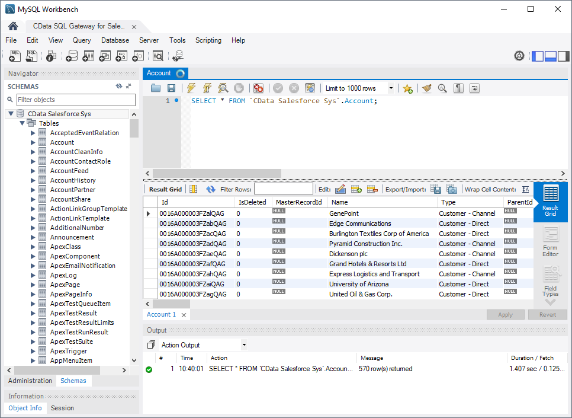
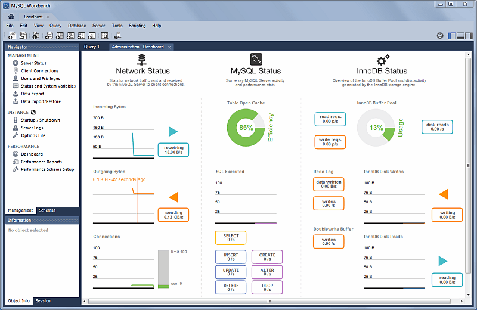

ASIGNACION NUMERO UNO

MySQL Workbench, una herramienta visual desarrollada por Oracle para la administración, diseño y desarrollo de bases de datos MySQL. Destaca por proporcionar una interfaz gráfica que permite a diversos usuarios gestionar bases de datos de manera eficiente.
Descripción de MySQL Workbench
- Herramienta integral para el diseño, modelado, gestión y administración de bases de datos MySQL.
- Proporciona una interfaz gráfica (GUI) que facilita su uso por administradores, desarrolladores y arquitectos.
- Desarrollada y actualizada regularmente por Oracle Corporation.
Aplicaciones y Usos
- Diseño y modelado de bases de datos.
- Creación y edición de scripts SQL.
- Administración de servidores y bases de datos.
- Migración de datos desde otros sistemas.
- Monitoreo del rendimiento de bases de datos.
Características técnicas
- Interfaz gráfica intuitiva: Facilita la gestión para usuarios de diferentes niveles.
- Compatibilidad multiplataforma: Disponible para Windows, macOS y Linux.
- Herramientas integradas: Administración de servidores, migración y modelado de datos.
- Ventajas: Bajo costo, alto rendimiento, y comunidad activa de usuarios.
- Desventajas: Requiere recursos significativos y está limitado a bases de datos MySQL.
Grandes Compendios de Base de datos
Panama
- Registro Público de Panamá: Una base de datos que contiene información sobre bienes inmuebles, sociedades anónimas, y otros registros legales.
- Sistema Nacional de Información Ambiental (SINIA): Una plataforma que consolida datos ambientales a nivel nacional, incluyendo inventarios de recursos naturales y biodiversidad.
Europa

- Eurostat: La oficina de estadística de la Unión Europea, que ofrece una base de datos completa sobre diversos indicadores económicos, demográficos y sociales de los estados miembros.
- Datos de la Agencia Europea de Medio Ambiente (EEA): Información sobre el estado del medio ambiente en Europa, incluyendo indicadores sobre cambio climático, biodiversidad y contaminación.
Procesos de Elaboración - Administración y Validación de los Datos
- Censos Nacionales: Son eventos masivos organizados por los gobiernos para recopilar datos demográficos, económicos y sociales. Ejemplos incluyen el censo de población, agricultura, y vivienda.
- Encuestas Nacionales de Salud: Implementadas para recoger datos sobre la salud de la población, incluyendo prevalencia de enfermedades y acceso a servicios de salud.
- Recopilación de Datos Ambientales: Incluyen monitoreos ambientales, estudios de biodiversidad, y recolección de datos meteorológicos.
Elaboración de los Datos
- Planificación: Se define qué datos se necesitan y cómo se recolectarán, considerando la representatividad y el tamaño de la muestra.
- Recolección de Datos: Se lleva a cabo a través de encuestas, sensores, registros administrativos, y otras herramientas.
- Integración de Datos: Los datos recolectados de múltiples fuentes son consolidados en un solo compendio.
Administración de los Datos
- Almacenamiento: Los datos se almacenan en bases de datos estructuradas, con seguridad para proteger la confidencialidad de la información.
- Acceso y Gestión: Se implementan mecanismos de acceso que aseguran que solo personas autorizadas puedan manipular los datos.
Evaluación Comparativa para Diversos Tipos de Empresas, Especialmente Centros Educativos
- Sistema Nacional de Información Educativa: Base de datos del gobierno que permite acceder a información estadística y administrativa del sistema educativo mexicano.
- IPEDS (Integrated Postsecondary Education Data System): Proporciona datos estadísticos sobre las instituciones educativas, programas, resultados académicos y financieros.